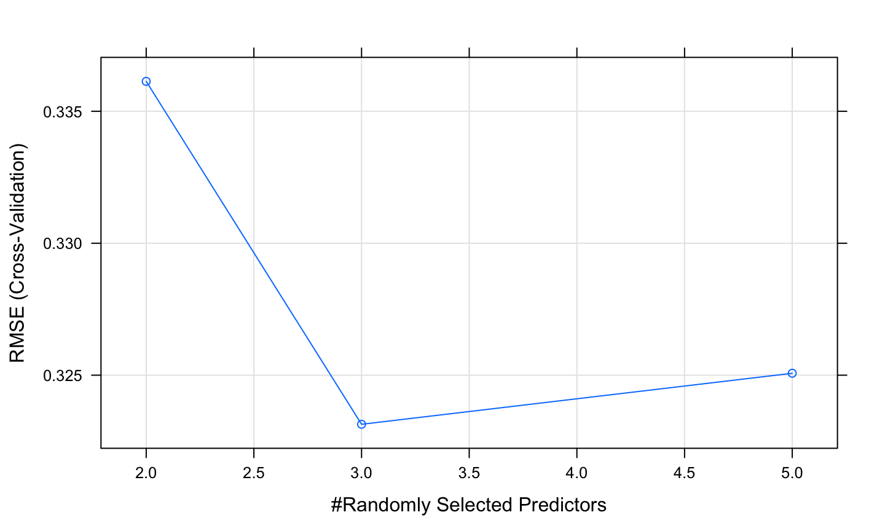
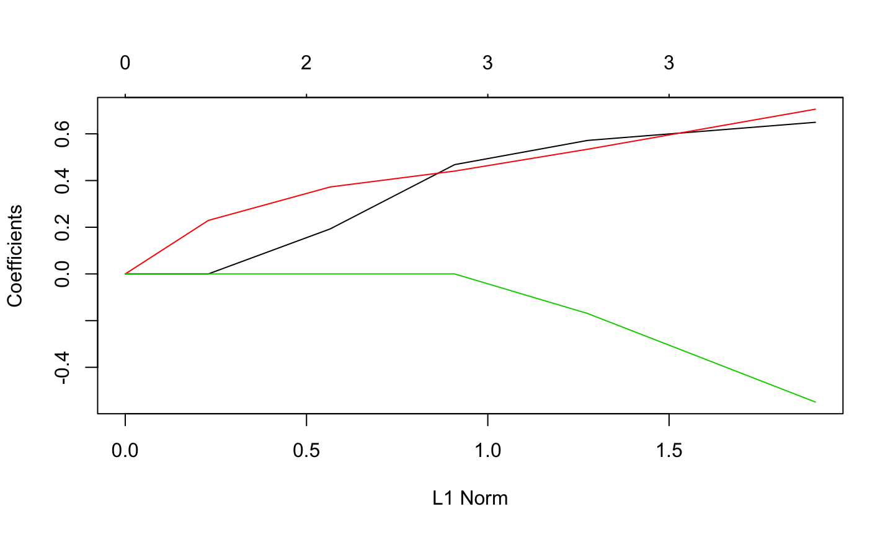

What variables to include, what to leave out, etc.
3 standard approaches: 1. Use theory 2. Let the data decide 3. Compare models
What variables to include, what to leave out, etc.
3 standard approaches: 1. Use theory 2. Let the data decide 3. Compare models
Want to generalize to other samples
pred.1 <- predict(model.1)
Balance between parsimony and completeness
“Building” models up or “pruning” models down
We don’t always want the best model fit
This is because the model will be tuned to our particular random sample, but not other random samples
We are “fitting the noise”
Not only does the extra terms not help, they actually hurt!
This would lead to poorer prediction of new samples.
Our goal is to identify the true population model, not just increase fit
\[ \hat{Y} = b_{0} + b_{1}X + b_{2}Z + b_{3}XZ \]
\[ \hat{Y} = .6 + .9X + .4Z + -.24XZ \] - because we use the specifics (which include sampling error) of that sample to estimate our coefficients
library(caret) # we will use the iris dataset (included in base) iris
## Sepal.Length Sepal.Width Petal.Length Petal.Width Species ## 1 5.1 3.5 1.4 0.2 setosa ## 2 4.9 3.0 1.4 0.2 setosa ## 3 4.7 3.2 1.3 0.2 setosa ## 4 4.6 3.1 1.5 0.2 setosa ## 5 5.0 3.6 1.4 0.2 setosa ## 6 5.4 3.9 1.7 0.4 setosa ## 7 4.6 3.4 1.4 0.3 setosa ## 8 5.0 3.4 1.5 0.2 setosa ## 9 4.4 2.9 1.4 0.2 setosa ## 10 4.9 3.1 1.5 0.1 setosa ## 11 5.4 3.7 1.5 0.2 setosa ## 12 4.8 3.4 1.6 0.2 setosa ## 13 4.8 3.0 1.4 0.1 setosa ## 14 4.3 3.0 1.1 0.1 setosa ## 15 5.8 4.0 1.2 0.2 setosa ## 16 5.7 4.4 1.5 0.4 setosa ## 17 5.4 3.9 1.3 0.4 setosa ## 18 5.1 3.5 1.4 0.3 setosa ## 19 5.7 3.8 1.7 0.3 setosa ## 20 5.1 3.8 1.5 0.3 setosa ## 21 5.4 3.4 1.7 0.2 setosa ## 22 5.1 3.7 1.5 0.4 setosa ## 23 4.6 3.6 1.0 0.2 setosa ## 24 5.1 3.3 1.7 0.5 setosa ## 25 4.8 3.4 1.9 0.2 setosa ## 26 5.0 3.0 1.6 0.2 setosa ## 27 5.0 3.4 1.6 0.4 setosa ## 28 5.2 3.5 1.5 0.2 setosa ## 29 5.2 3.4 1.4 0.2 setosa ## 30 4.7 3.2 1.6 0.2 setosa ## 31 4.8 3.1 1.6 0.2 setosa ## 32 5.4 3.4 1.5 0.4 setosa ## 33 5.2 4.1 1.5 0.1 setosa ## 34 5.5 4.2 1.4 0.2 setosa ## 35 4.9 3.1 1.5 0.2 setosa ## 36 5.0 3.2 1.2 0.2 setosa ## 37 5.5 3.5 1.3 0.2 setosa ## 38 4.9 3.6 1.4 0.1 setosa ## 39 4.4 3.0 1.3 0.2 setosa ## 40 5.1 3.4 1.5 0.2 setosa ## 41 5.0 3.5 1.3 0.3 setosa ## 42 4.5 2.3 1.3 0.3 setosa ## 43 4.4 3.2 1.3 0.2 setosa ## 44 5.0 3.5 1.6 0.6 setosa ## 45 5.1 3.8 1.9 0.4 setosa ## 46 4.8 3.0 1.4 0.3 setosa ## 47 5.1 3.8 1.6 0.2 setosa ## 48 4.6 3.2 1.4 0.2 setosa ## 49 5.3 3.7 1.5 0.2 setosa ## 50 5.0 3.3 1.4 0.2 setosa ## 51 7.0 3.2 4.7 1.4 versicolor ## 52 6.4 3.2 4.5 1.5 versicolor ## 53 6.9 3.1 4.9 1.5 versicolor ## 54 5.5 2.3 4.0 1.3 versicolor ## 55 6.5 2.8 4.6 1.5 versicolor ## 56 5.7 2.8 4.5 1.3 versicolor ## 57 6.3 3.3 4.7 1.6 versicolor ## 58 4.9 2.4 3.3 1.0 versicolor ## 59 6.6 2.9 4.6 1.3 versicolor ## 60 5.2 2.7 3.9 1.4 versicolor ## 61 5.0 2.0 3.5 1.0 versicolor ## 62 5.9 3.0 4.2 1.5 versicolor ## 63 6.0 2.2 4.0 1.0 versicolor ## 64 6.1 2.9 4.7 1.4 versicolor ## 65 5.6 2.9 3.6 1.3 versicolor ## 66 6.7 3.1 4.4 1.4 versicolor ## 67 5.6 3.0 4.5 1.5 versicolor ## 68 5.8 2.7 4.1 1.0 versicolor ## 69 6.2 2.2 4.5 1.5 versicolor ## 70 5.6 2.5 3.9 1.1 versicolor ## 71 5.9 3.2 4.8 1.8 versicolor ## 72 6.1 2.8 4.0 1.3 versicolor ## 73 6.3 2.5 4.9 1.5 versicolor ## 74 6.1 2.8 4.7 1.2 versicolor ## 75 6.4 2.9 4.3 1.3 versicolor ## 76 6.6 3.0 4.4 1.4 versicolor ## 77 6.8 2.8 4.8 1.4 versicolor ## 78 6.7 3.0 5.0 1.7 versicolor ## 79 6.0 2.9 4.5 1.5 versicolor ## 80 5.7 2.6 3.5 1.0 versicolor ## 81 5.5 2.4 3.8 1.1 versicolor ## 82 5.5 2.4 3.7 1.0 versicolor ## 83 5.8 2.7 3.9 1.2 versicolor ## 84 6.0 2.7 5.1 1.6 versicolor ## 85 5.4 3.0 4.5 1.5 versicolor ## 86 6.0 3.4 4.5 1.6 versicolor ## 87 6.7 3.1 4.7 1.5 versicolor ## 88 6.3 2.3 4.4 1.3 versicolor ## 89 5.6 3.0 4.1 1.3 versicolor ## 90 5.5 2.5 4.0 1.3 versicolor ## 91 5.5 2.6 4.4 1.2 versicolor ## 92 6.1 3.0 4.6 1.4 versicolor ## 93 5.8 2.6 4.0 1.2 versicolor ## 94 5.0 2.3 3.3 1.0 versicolor ## 95 5.6 2.7 4.2 1.3 versicolor ## 96 5.7 3.0 4.2 1.2 versicolor ## 97 5.7 2.9 4.2 1.3 versicolor ## 98 6.2 2.9 4.3 1.3 versicolor ## 99 5.1 2.5 3.0 1.1 versicolor ## 100 5.7 2.8 4.1 1.3 versicolor ## 101 6.3 3.3 6.0 2.5 virginica ## 102 5.8 2.7 5.1 1.9 virginica ## 103 7.1 3.0 5.9 2.1 virginica ## 104 6.3 2.9 5.6 1.8 virginica ## 105 6.5 3.0 5.8 2.2 virginica ## 106 7.6 3.0 6.6 2.1 virginica ## 107 4.9 2.5 4.5 1.7 virginica ## 108 7.3 2.9 6.3 1.8 virginica ## 109 6.7 2.5 5.8 1.8 virginica ## 110 7.2 3.6 6.1 2.5 virginica ## 111 6.5 3.2 5.1 2.0 virginica ## 112 6.4 2.7 5.3 1.9 virginica ## 113 6.8 3.0 5.5 2.1 virginica ## 114 5.7 2.5 5.0 2.0 virginica ## 115 5.8 2.8 5.1 2.4 virginica ## 116 6.4 3.2 5.3 2.3 virginica ## 117 6.5 3.0 5.5 1.8 virginica ## 118 7.7 3.8 6.7 2.2 virginica ## 119 7.7 2.6 6.9 2.3 virginica ## 120 6.0 2.2 5.0 1.5 virginica ## 121 6.9 3.2 5.7 2.3 virginica ## 122 5.6 2.8 4.9 2.0 virginica ## 123 7.7 2.8 6.7 2.0 virginica ## 124 6.3 2.7 4.9 1.8 virginica ## 125 6.7 3.3 5.7 2.1 virginica ## 126 7.2 3.2 6.0 1.8 virginica ## 127 6.2 2.8 4.8 1.8 virginica ## 128 6.1 3.0 4.9 1.8 virginica ## 129 6.4 2.8 5.6 2.1 virginica ## 130 7.2 3.0 5.8 1.6 virginica ## 131 7.4 2.8 6.1 1.9 virginica ## 132 7.9 3.8 6.4 2.0 virginica ## 133 6.4 2.8 5.6 2.2 virginica ## 134 6.3 2.8 5.1 1.5 virginica ## 135 6.1 2.6 5.6 1.4 virginica ## 136 7.7 3.0 6.1 2.3 virginica ## 137 6.3 3.4 5.6 2.4 virginica ## 138 6.4 3.1 5.5 1.8 virginica ## 139 6.0 3.0 4.8 1.8 virginica ## 140 6.9 3.1 5.4 2.1 virginica ## 141 6.7 3.1 5.6 2.4 virginica ## 142 6.9 3.1 5.1 2.3 virginica ## 143 5.8 2.7 5.1 1.9 virginica ## 144 6.8 3.2 5.9 2.3 virginica ## 145 6.7 3.3 5.7 2.5 virginica ## 146 6.7 3.0 5.2 2.3 virginica ## 147 6.3 2.5 5.0 1.9 virginica ## 148 6.5 3.0 5.2 2.0 virginica ## 149 6.2 3.4 5.4 2.3 virginica ## 150 5.9 3.0 5.1 1.8 virginica
# define training control train_control <- trainControl(method="cv", number=10, savePredictions = TRUE) # train the model model.iris <- train(Sepal.Length~., data=iris, trControl=train_control)
print(model.iris)
## Random Forest ## ## 150 samples ## 4 predictor ## ## No pre-processing ## Resampling: Cross-Validated (10 fold) ## Summary of sample sizes: 136, 135, 135, 135, 135, 135, ... ## Resampling results across tuning parameters: ## ## mtry RMSE Rsquared MAE ## 2 0.3327598 0.8449052 0.2724648 ## 3 0.3216275 0.8538828 0.2655255 ## 5 0.3185528 0.8585582 0.2582684 ## ## RMSE was used to select the optimal model using the smallest value. ## The final value used for the model was mtry = 5.
plot(model.iris)

Package is very flexible and will be used for more methods below
Use tuneGrid function to test specific parameters or models (this example was using default options that may not be useful)
library(glmnet)
library(dplyr)
fit.ols <- lm(Sepal.Length~Sepal.Width+Petal.Length+Petal.Width, data=iris)
y <- iris$Sepal.Length
x <- iris %>% dplyr::select(Sepal.Width, Petal.Length,Petal.Width) %>% data.matrix()
lambdas <- 10^seq(-4, 1, by = .5)
fit.lasso <-glmnet(x = x, y = y, lambda = lambdas)
library(broom) tidy(summary(fit.ols))
## # A tibble: 4 x 5 ## term estimate std.error statistic p.value ## <chr> <dbl> <dbl> <dbl> <dbl> ## 1 (Intercept) 1.86 0.251 7.40 9.85e-12 ## 2 Sepal.Width 0.651 0.0666 9.77 1.20e-17 ## 3 Petal.Length 0.709 0.0567 12.5 7.66e-25 ## 4 Petal.Width -0.556 0.128 -4.36 2.41e- 5
plot(fit.lasso)
